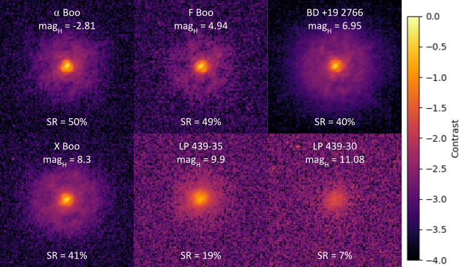
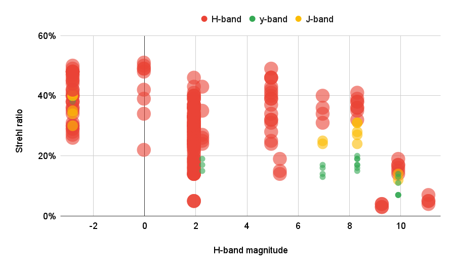
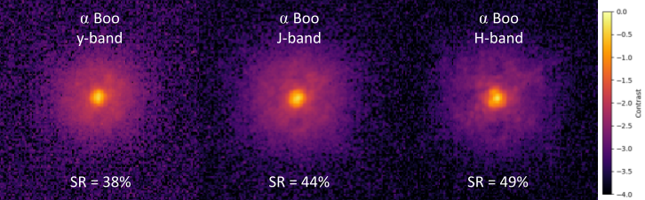
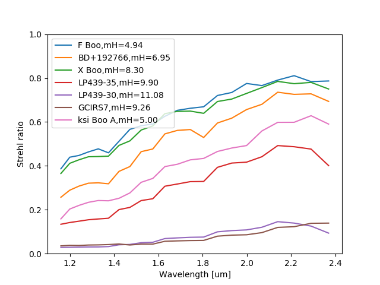
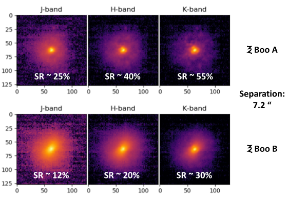
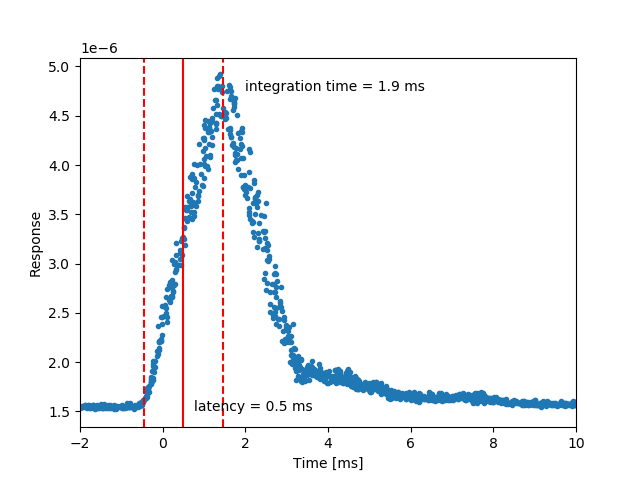
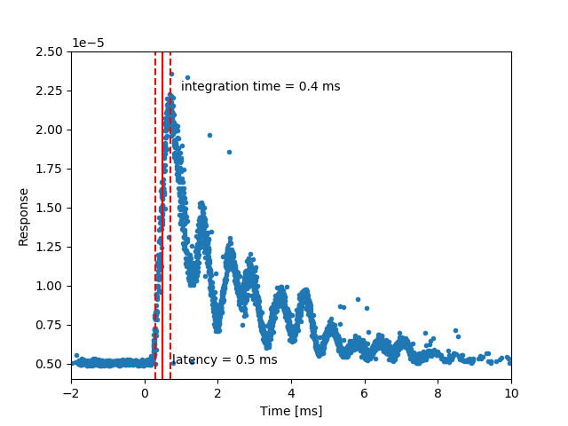
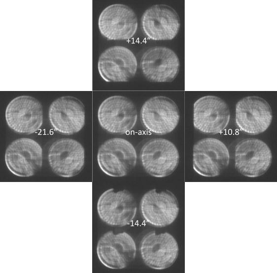
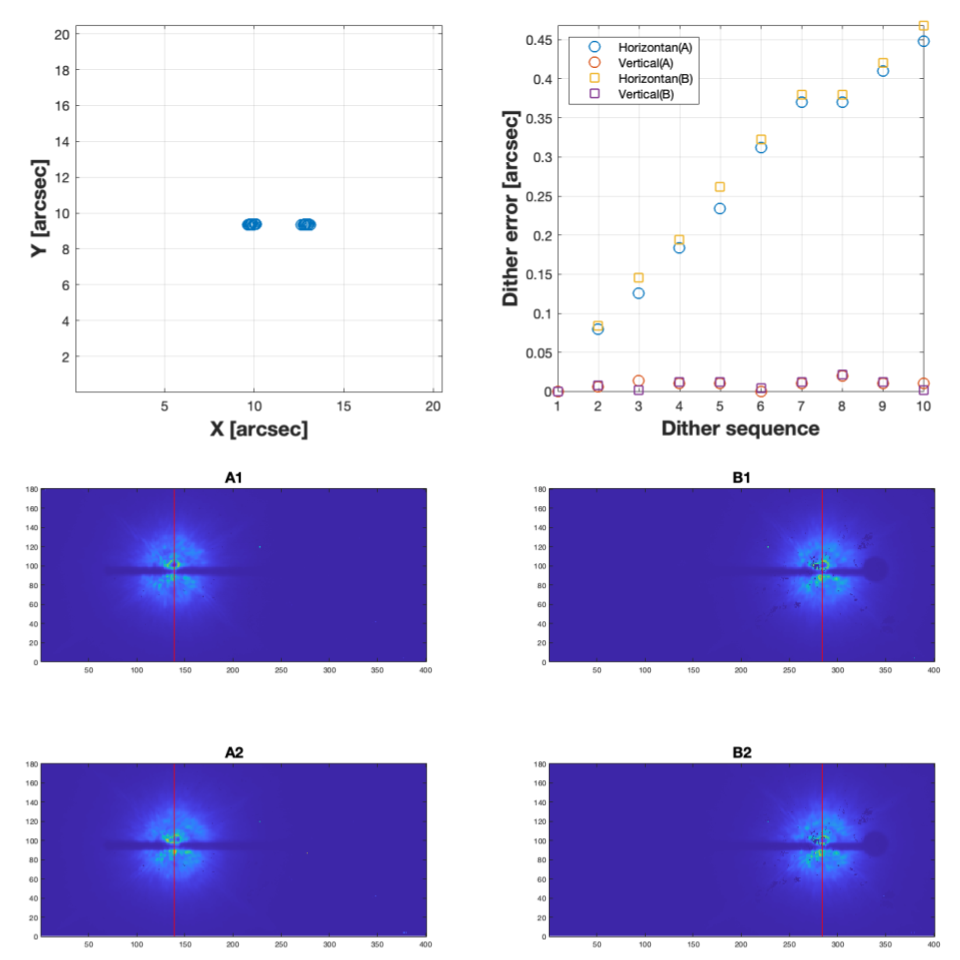

NIR WFS
NIR WFS
|
|
Near-IR Wavefront Sensor - Performance
Strehl Ratio Measurements
Conditions and Targets
The on-sky results presented below where taken during the engineering night of May 3, 2023. We
ran the AO loop at 500 Hz with the YJH50 dichroic beamsplitter (see the Technical description page for more details).
The seeing was above average: 0.7 to 1.1". We observed several targets with similar magnitudes
in J and H. Images were recorded with SCExAO's internal SWIR camera Palila (First Light Imaging
C-RED 2, y- to H-band), and the CHARIS integral field spectrograph in broadband mode (J- to
K-band).
|  |
|
H-band Strehl measurements obtained with SCExAO's Palila camera, over a few
seconds, for targets with various magnitudes. Each image is 2x2".
|
Strehl Ratio vs. H-band Magnitude
|  |
|
Compilation of all the Strehl measurements taken with SCExAO's Palila camera in
y-, J- and H-band. This includes times where we were tuning various parameters,
so some Strehl values can be much lower than optimal. The higher values for each
magnitude would represent the performance of the loop in normal conditions. The
Strehl ratio is over 40% until magnitude ~9, then decreases. This was done with
the YJH50 dichroic, so the result would be shifted by ~+0.75 magnitude with the
K-band dichroic, and ~-1.75 with the YJH90 dichroic.
|
Strehl Ratio vs. wavelength
|  |
|
Strehl ratio measurements in y-, J- and H-band with SCExAO's Palila camera, on
the target α Boo. A dark hole (control region of the deformable mirror) is
visible, even at short wavelengths. This is a sign that the correction is
excellent, even better than with the curvature wavefront sensor for which this
dark hole was never observed.
|
 |
|
Strehl ratio measurements in J-, H- and K-band with CHARIS, on the target X Boo.
A dark hole (control region of the deformable mirror) is visible, even at short
wavelengths. This is a sign that the correction is excellent, even better than
with the curvature wavefront sensor for which this dark hole was never observed.
|
|  |
 |
|
Strehl ratio measurements for the best frame of each target, for each wavelength
slice of CHARIS in broadand mode. Most curves tend to plateau and even decrease
after 2 μm, which is probably an effect of the increased thermal background
that was not subtracted properly. Otherwise, the Strehl ratio evolves pretty
linearly with wavelength.
|
Strehl ratio measurements on the target X Boo, for all the 30 s CHARIS frames
recorded on this target.
|
Strehl Ratio vs. separation
|  |
|
Strehl ratio measurements on the binary ξ Boo AB (H-mag ~5 for both stars).
The loop was closed on ξ Boo A, then the NIR WFS was steered on the companion
ξ Boo B. The seeing was about 0.8” with high altitude turbulence and
relatively high wind. The Strehl ratio of ξ Boo B is reduced by ~50% compared
to ξ Boo A, with a strong wind-driver halo visible. The effect of
anisoplanetism depends strongly on the atmospheric conditions.
|
Latency
The hardware latency is the time between receiving an image and the command being first applied
to the DM. It has to be as small as possible.
It is measured by sending commands to the deformable mirror with small incremental delays, and
measuring changes in the sensor. The ideal response would then be a triangle function with a
rising time corresponding to the integration time, and the hardware latency the time when we
reach the half-way point. This latency is independant of the loop frequency.
|  |
 |
|
Latency measurement at 500 Hz.
|
Latency measurement at 2 kHz.
|
We measured the hardware latency to be 0.5 ms, independantly of the loop frequency as expected.
This corresponds to 1 frame at 2 kHz, 0.5 frame at 1 kHz and 0.25 frame at 500 Hz. This is good,
and should help in case of high wind. But we also noticed the strong mechanical resonance of the
188 DM at ~1.2 kHz, which limits the control at 1 kHz, and makes control at 2 kHz unlikely with
the current AO188 DM.
Field of View (FoV)
There are two FoVs to consider: The FoV of the wavefront sensor in a fixed position, and the FoV
of the instrument as a whole, including the steering capability (the patrol FoV).
In both PyWFS and FPWFS, the required FoV is 2.8x2.8”, defined by the control region of the
ALPAO 64x64 DM. It is much smaller for the 188 DM. The FoV of the PyWFS was measured at 5x6”,
and the FoV of the FPWFS is 4x5”.
The patrol FoV was measured by moving the calibration source and recentering the image using the
steering mirror.
It is over ±10” vertically, >+7 and <-20” horizontally. The range is good, but it will be
centered better horizontally in the future.
|  |
|
PyWFS images for extreme off-axis targets, where a vignetting starts to
be noticed.
|
Dithering error
For IRCS's echelle spectroscopic mode, a dithering sequence is necessary to move the
object of interest along the slit of the spectrograph. We tested that functionnality
during the engineering night of May 25, 2023. We found that, due to the current design
of the steering/modulating mirror, the stage introduces a drift during the dithering
sequence, of about 50 mas per frame (see figure top right below). Since the drift seems
to be linear, we will remove this componant and test it in S23B, which should leave a
dithering error below 50 mas, without any drift. A redesign of the steering mount is
also in progress to improve the absolute positioning and repeatability of the steering
and dithering modes.
|  |
|
Precision of the dithering sequence with IRCS: examples of ditehring
images during the sequence (bottom), position measurement (top left) and
dithering error per frame compared to the first frame (top right).
|
|
{kind=link}
{kind=link}
{kind=link}
{kind=link}
{kind=link}
{kind=link}
{kind=link}
{kind=link}
{kind=link}